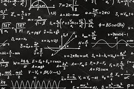
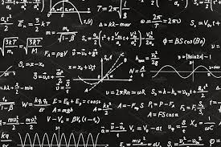

Lets talk about skills.
First is sports, I play basketball, volleyball and badminton
but I am not really that good. I am more suited when it comes
to board games specially in chess because that is my favorite.
Next is academics, I am confident when it comes to math because
I am really good at it and when it comes to my major subjects
specially Web Development I am pretty sure that I am getting
better at coding because whenever i have a vacant time I practice
some codes that I see or search in the internet.